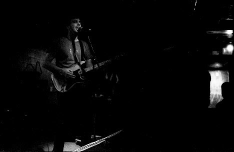
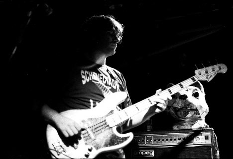
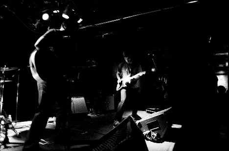
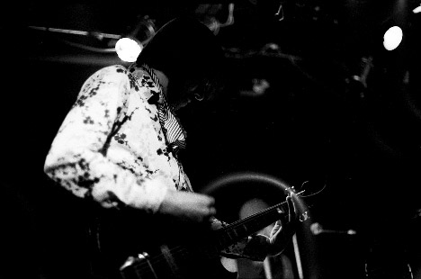
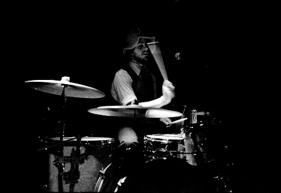
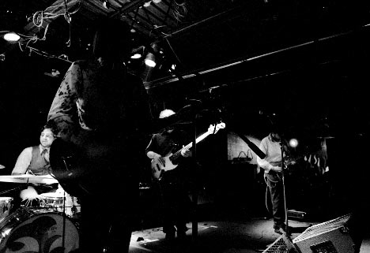
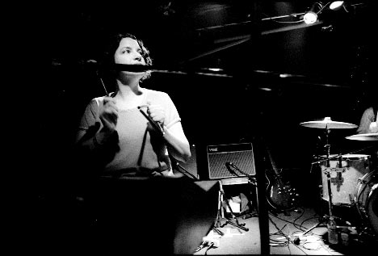
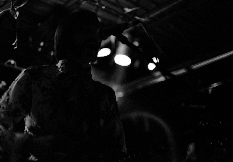
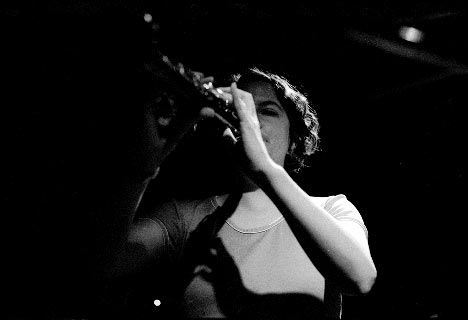
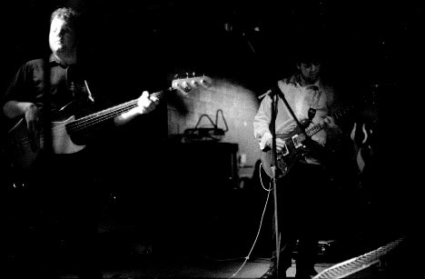

Big Orange Crayonmusical thingsThe Stars of Rock and Of Montreal Valentine's, Albany, NY September 23rd, 2002 It took me quite a while to finally get these pictures up, eh? So, the lighting at Valentine's has really sucked that past few times I was there. It's getting annoying. It's all backlit and there are never any lights on the people in the bands, just on the floor where nobody is standing. Oh well. This was also the Caper of the Film Who Refused To Get On the Goddamn Developing Spool. That's why some of the pictures have little white circles on them - that's where the developing screwed up because the film buckled. Arg. Anyway, none of this interferes with how happy I am that Of Montreal finally played in Albany. It was a really cute show, and I wish you could see more of Kevin Barnes' "hey, check out my van" facial hair. Pictures: The Stars of Rock    Of Montreal  Here's a bigger version of this one...       Camera stuff: Body: Nikon F3HP Lenses: 50mm f/1.4 and 24mm f/2.8 Nikkors Film: Fuji Neopan 1600 exposed at ISO 3200, developed in Agfa Rodinal (1+100) for 28 minutes at 21 degrees, with an inversion and a little twirl every two minutes. Please don't use these elsewhere unless you are in one of the bands or are a nice person. |
{kind=link}